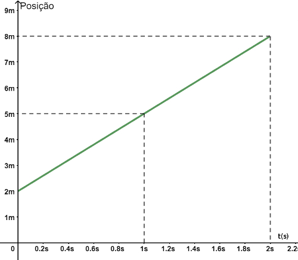

SEM IMAGEM
Normalmente, quantos litros de sangue uma pessoa tem? Em média, quantos são retirados numa doação de sangue?
COM IMAGEM
O gráfico a seguir relaciona a posição de um móvel, em metros, com o tempo, em segundos.
